Across datasets
The same panel, recipe and rule on every dataset, side by side. Rebuilt from the committed results with julia --project=showcase showcase/analyses/cross_dataset.jl.
| Dataset | Scale | Curves | Rule pick | ΔBIC to next model | Fully identifiable (%) | Best forecaster (median error) | Agrees with paper? |
|---|---|---|---|---|---|---|---|
| benzekry2014 llc | mouse | 20 | exponential linear | 4.8 | 55 | power law (13.7%) | ⚠️ Partly matches the paper |
| benzekry2014 lm24 | mouse | 64 | classic gompertz | 10.2 | 58 | power law (15.8%) | ⚠️ Partly matches the paper |
| browning2021 spheroids | spheroid | 170 | theta logistic | 76.1 | 41 | general bertalanffy (5.6%) | ➖ Not directly comparable with the paper |
| bruchovsky iadt psa | patient | 72 | classic gompertz exposure kill | 2674.2 | 93 | classic gompertz exposure kill (54.3%) | ➖ Not directly comparable with the paper |
| ebos sunitinib | mouse | 99 | classic gompertz exposure kill | 44.6 | 30 | exponential exposure kill (20.7%) | ✅ Matches the paper |
| ghaffarilaleh2022 recist | patient | 641 | logistic kill | 8.9 | 6 | logistic kill (10.4%) | ⚠️ Partly matches the paper |
| harris2016 pc9 | in vitro 2D | 13 | power law | 16.9 | 23 | general bertalanffy (8.8%) | ➖ Not directly comparable with the paper |
| johnson2019 bt474 | in vitro 2D | 48 | weak allee | 1528.1 | — | exponential (13.9%) | ✅ Matches the paper |
| kaznatcheev2019 h3122 | in vitro 2D co-culture | 288 | theta logistic | 312.7 | 41 | theta logistic (5.3%) | ➖ Not directly comparable with the paper |
Fully identifiable: share of curves on which every parameter of the pick has a closed 95% profile interval.
Which law wins where
Each cell is the summed ΔBIC divided by the number of curves, so datasets of different size share one scale; the star marks the rule pick. Grey means the model was not in that dataset's panel.
Untreated growth
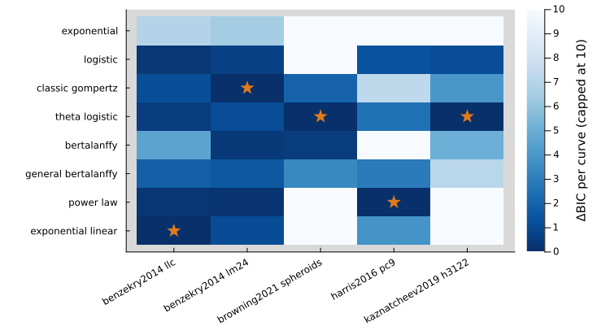
How often each law is the pick when every curve is judged on its own. Short or noisy curves favour simple laws, which is why per-curve shares and the dataset-level pick can disagree.
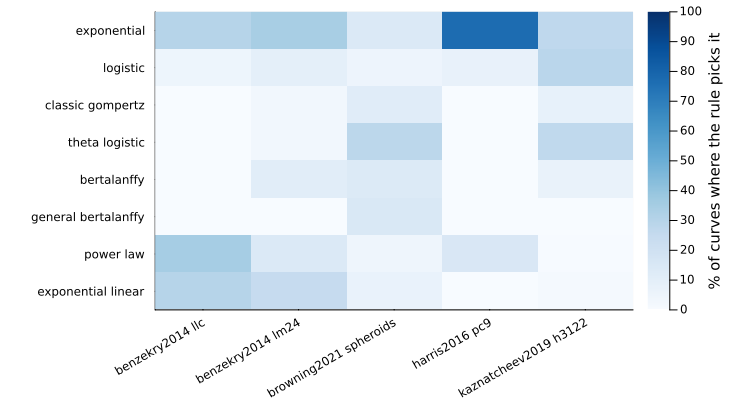
Under treatment
Treated datasets use a panel of treatment-response laws (see each dataset page).
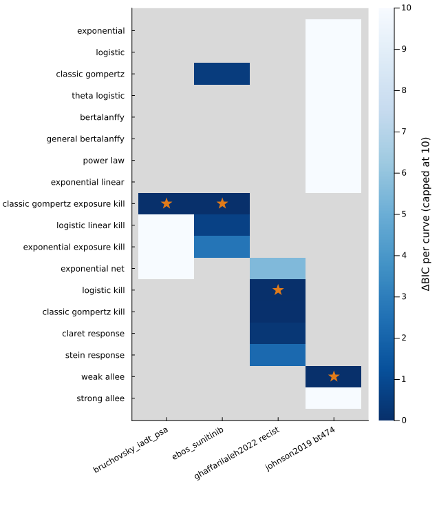
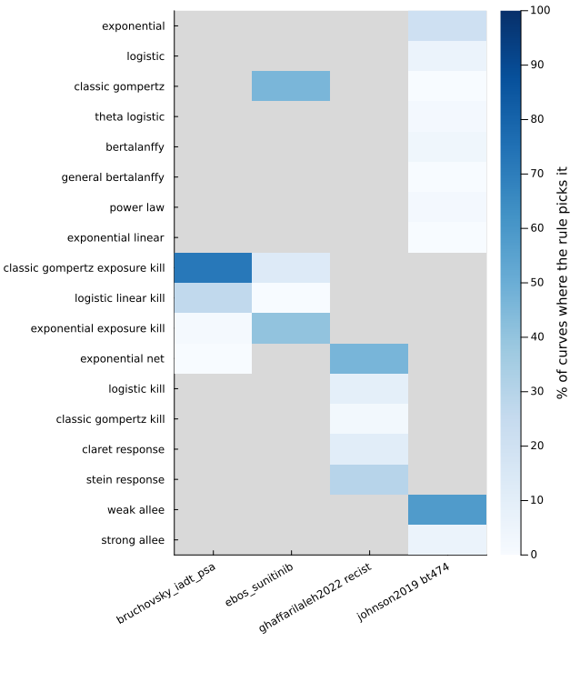
Package diagnostics by dataset
The package's own tools on up to 12 curves per dataset, for every model in the panel (details on each page). Fisher agrees = Wald interval within a factor of 1.5 of the profile interval; profile closes = the 95% interval ends inside the parameter bounds; error scale = residual scatter as a multiple of the nominal 10% error.
The pick on each dataset
| Dataset | Curves | Models checked | Error scale (× 10%) | Fisher agrees (%) | Profile closes (%) | Synthetic recovery: abs. bias (%) | Cross-validation: held-out error (%) | Lowest held-out error (model) |
|---|---|---|---|---|---|---|---|---|
| Lewis lung carcinoma subcutaneous volumes | 12 | 8 | 1.3 | 75 | 88 | 1.2 | 13.1 | theta logistic (10.2%) |
| LM2-4LUC+ breast xenograft volumes (vehicle) | 12 | 8 | 1.2 | 50 | 96 | 20.3 | 11.6 | exponential linear (10.1%) |
| Melanoma spheroid radius over time | 12 | 8 | 0.9 | 22 | 64 | 0.4 | 7.4 | general bertalanffy (2.3%) |
| PSA under intermittent androgen deprivation | 12 | 4 | 7.0 | 92 | 97 | 1.8 | 29.8 | classic gompertz exposure kill (29.8%) |
| Breast xenografts with neoadjuvant sunitinib or axitinib | 12 | 4 | 1.5 | 47 | 69 | 13.2 | 15.6 | logistic linear kill (14.9%) |
| NSCLC and bladder cancer target-lesion diameters under atezolizumab/docetaxel | 12 | 5 | 0.8 | 0 | 53 | 27.9 | 6.7 | stein response (5.8%) |
| PC9 parental and sublines, untreated | 12 | 8 | 1.5 | 25 | 62 | 5.0 | 5.8 | theta logistic (5.1%) |
| BT-474 growth at low seeding density | 12 | 10 | 1.3 | 53 | 81 | 1.5 | 5.3 | weak allee (5.3%) |
| H3122 parental vs alectinib-resistant co-culture | 12 | 8 | 0.5 | 33 | 75 | 5.0 | 3.5 | theta logistic (3.5%) |
Each model, across the datasets it was fitted on (medians of the per-dataset values)
| Model | Datasets | Fisher agrees (%) | Profile closes (%) | Synthetic recovery: abs. bias (%) | Cross-validation: held-out error (%) |
|---|---|---|---|---|---|
| bertalanffy | 6 | 30 | 66.7 | 16.0 | 12.9 |
| claret response | 1 | 17 | 41.7 | 193.0 | 7.1 |
| classic gompertz | 7 | 36 | 87.5 | 16.7 | 10.1 |
| classic gompertz exposure kill | 2 | 69 | 83.3 | 7.5 | 22.7 |
| classic gompertz kill | 1 | 22 | 61.1 | 56.0 | 6.6 |
| exponential | 6 | 99 | 100.0 | 0.3 | 12.6 |
| exponential exposure kill | 2 | 48 | 75.0 | 3.6 | 43.7 |
| exponential linear | 6 | 58 | 79.2 | 1.2 | 6.4 |
| exponential net | 2 | 54 | 58.3 | 22.2 | 57.0 |
| general bertalanffy | 6 | 2 | 40.3 | 16.9 | 6.9 |
| logistic | 6 | 58 | 79.2 | 3.4 | 7.4 |
| logistic kill | 1 | 0 | 52.8 | 27.9 | 6.7 |
| logistic linear kill | 2 | 46 | 59.7 | 3.7 | 57.4 |
| power law | 6 | 30 | 60.4 | 11.7 | 6.9 |
| stein response | 1 | 31 | 52.8 | 23.6 | 5.8 |
| strong allee | 1 | 6 | 72.2 | 15414.6 | 14.5 |
| theta logistic | 6 | 23 | 77.8 | 4.7 | 7.6 |
| weak allee | 1 | 53 | 80.6 | 1.5 | 5.3 |
Identifiability by dataset
Share of curves on which every parameter of the pick has a closed 95% profile interval.
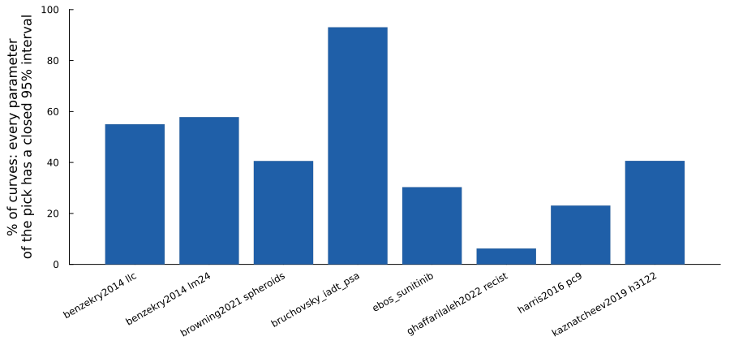
Gallery
Lewis lung carcinoma subcutaneous volumes
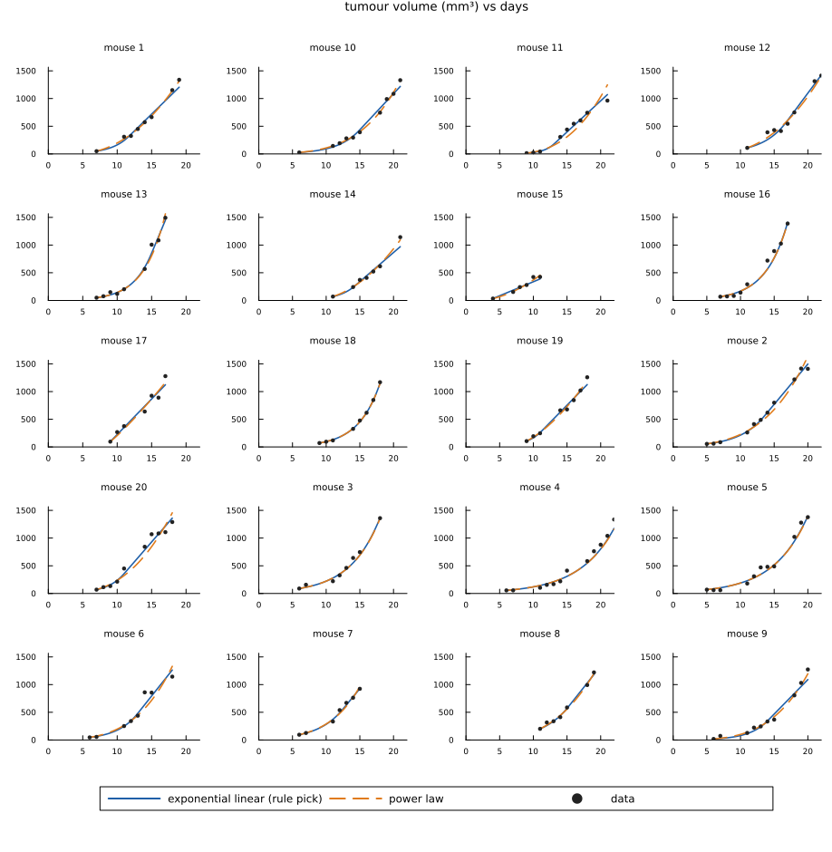
LM2-4LUC+ breast xenograft volumes (vehicle)

Melanoma spheroid radius over time
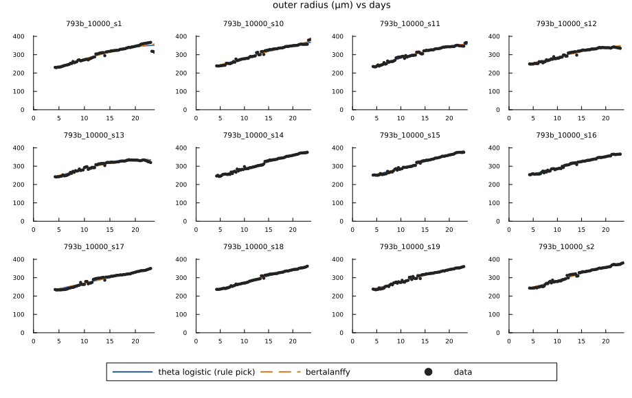
PSA under intermittent androgen deprivation
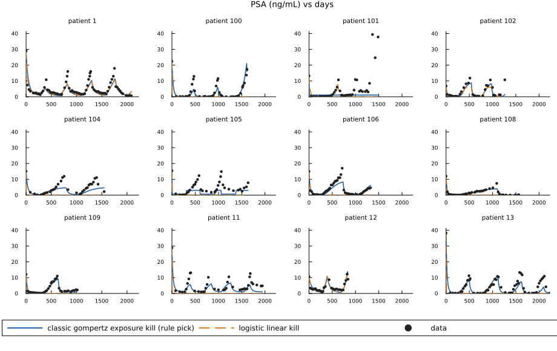
Breast xenografts with neoadjuvant sunitinib or axitinib
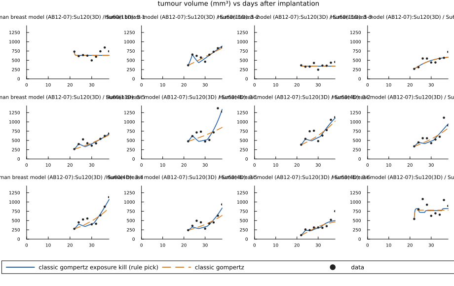
NSCLC and bladder cancer target-lesion diameters under atezolizumab/docetaxel

PC9 parental and sublines, untreated
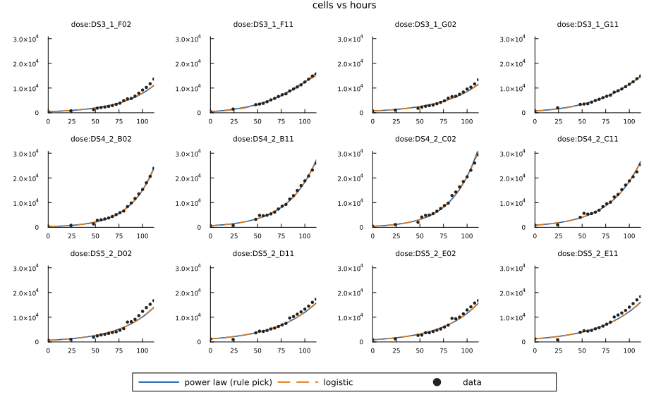
BT-474 growth at low seeding density
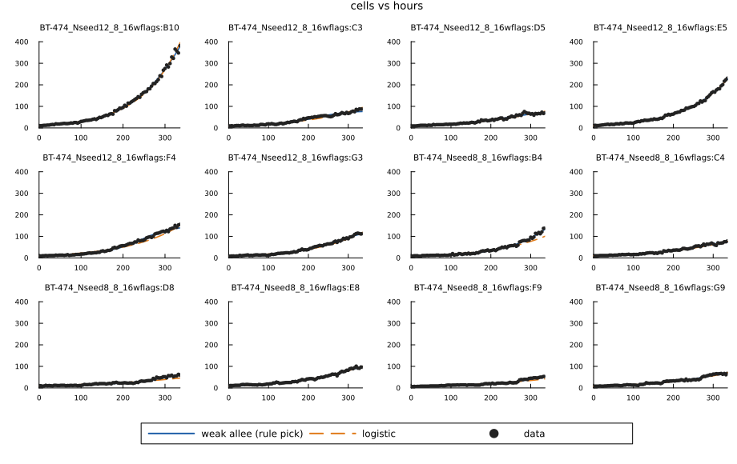
H3122 parental vs alectinib-resistant co-culture
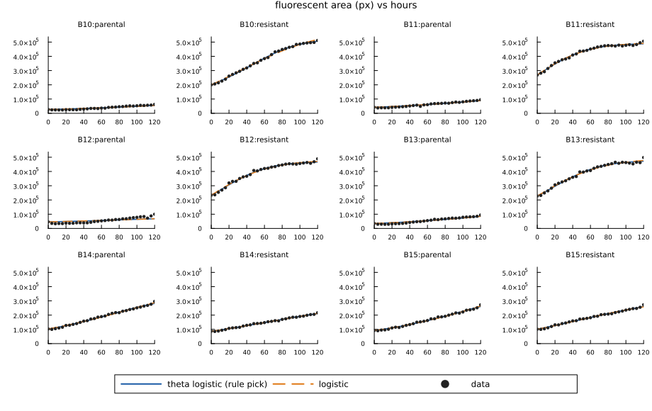